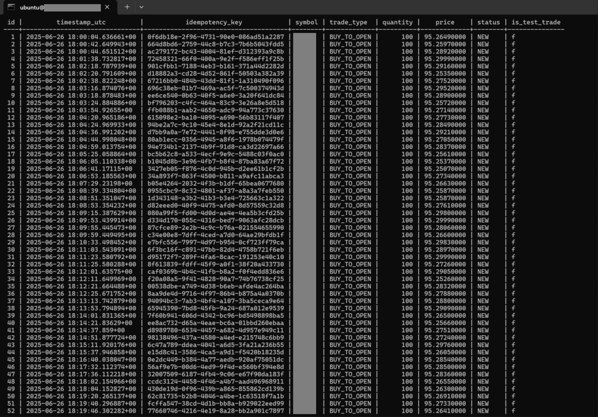
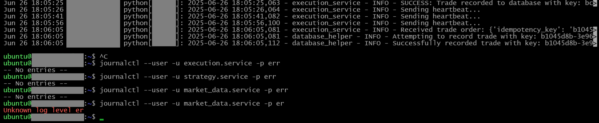
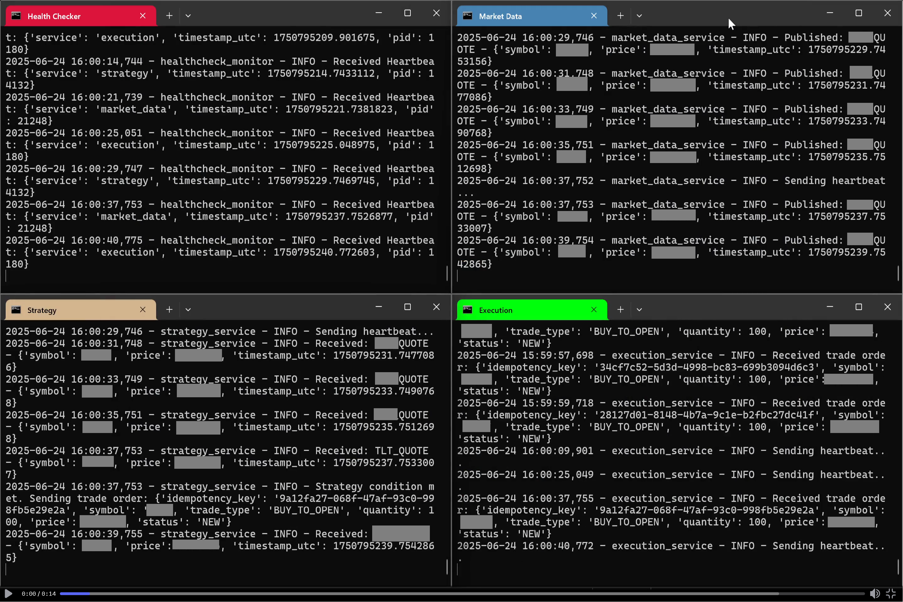

Systematic Options Trading System
Signal ResearchSystem DevelopmentProject link: GitHub
Strategy targets (Mar - Apr):
- Starting cash allocation: $100,000
- Final cash allocation: $105,000
- Weekly Premium Capture: 0.3% to 0.4% of portfolio value
- Sharpe Ratio: 1.2
- Daily turnover: Averaged roughly 8%
- Max drawdown: 9%
- Risk Management Overlay: Automatically halted all new trades if the portfolio's unrealized drawdown exceeded a 10% threshold.
This project began with a profitable, discretionary options strategy that a partner and I were manually trading. The strategy was designed to generate consistent income from pricing inefficiencies in options on a specific long-term treasury bond ETF.
Order log snippet:
While the core logic was sound, manual execution was slow and repetitive, and could be systemized. I wanted to transform it into a fully systematic, automated process. This required a two-part effort: first, building a robust, fault-tolerant trading system from scratch, and second, automating our manual strategy onto the system with a set of precise rules that the system could execute.
Part 1: Building the Trading System
The first and most critical step was to build a strong foundation that could run 24/7 without supervision. Instead of a single script, I made the system as a collection of three independent Linux systemd services, each with a single responsibility.
Error log (empty) snippet after 3 months of running continuously:
The Market Data Pillar
This service gathers data for the system. Its only job is to connect to the brokerage API and continuously gather all necessary information: real-time market prices, the full option chain, current account balances, and existing positions. It collects this data and sends via ZeroMQ to the Strategy pillar.
The Strategy Pillar
This service makes decisions. It subscribes to data from the Market Data pillar and contains all modelling logic. It is completely isolated - it cannot place trades or see the market directly. It analyzes data and, if the conditions are right, publishes a trade order.
The Execution Pillar
This service executes orders. It subscribes to the trade orders published by the Strategy pillar. Once it receives an order, it logs the trade to an SQL server (for logs), sends it to the broker for execution, and then updates the database with the outcome.
System Integrity
These three pillars communicate using a ZeroMQ message bus, which keeps them decoupled and resilient. To attempt to ensure no trade gets lost or duplicated, I used a PostgreSQL database with idempotency keys. Every trade decision was assigned a unique ID, and the database would reject any duplicates, guaranteeing transactional integrity even if a service crashed and restarted.
Part 2: Developing the Systematic Strategy
With the core system built, the second phase was to translate our manual trading rules into an algorithm that the Strategy pillar could execute automatically.
Communications between pillars and order path snippet:
Options Income
The system is an income-generating strategy. It runs a perpetual cycle of selling options premium against a long-term treasury bond ETF.
The strategy's execution is state-dependent, adapting its actions based on whether the portfolio is holding the underlying asset or cash.
When holding the asset, the system generates income by selling covered calls. The selection of which option to sell is determined by a model that calculates the trade-off between premium income and the probability of assignment. When holding cash, entry signals are generated by a model that scans options for delta based inefficiencies, and finds new positions.